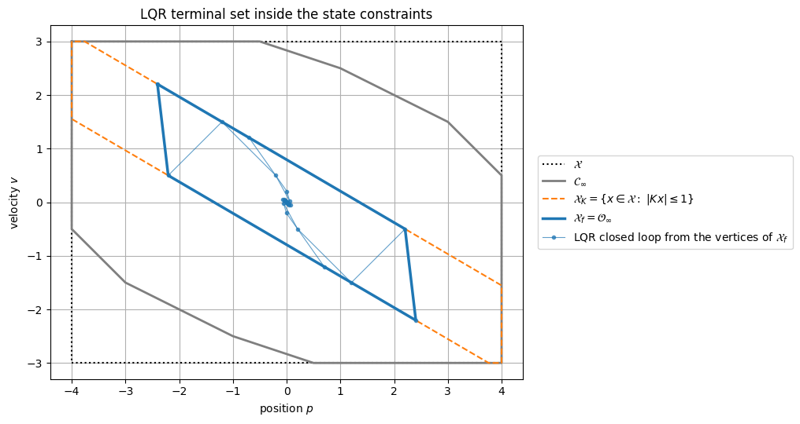
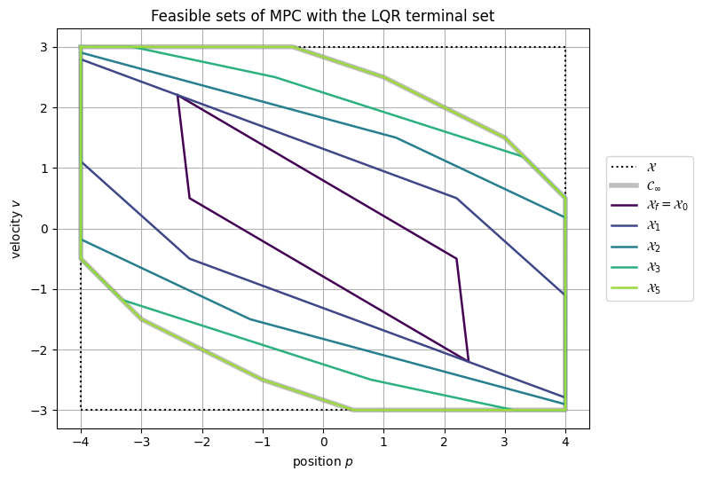
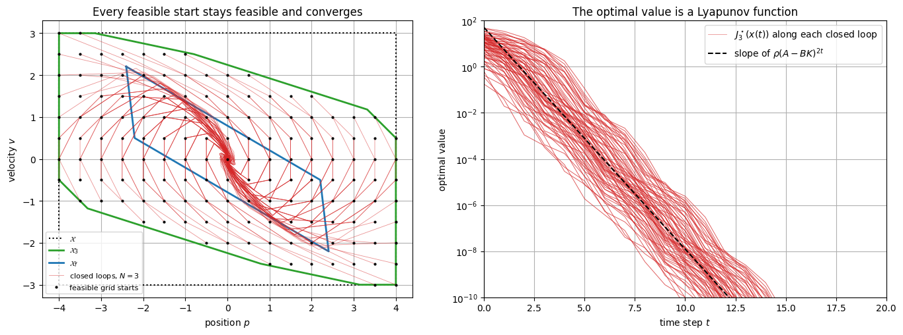
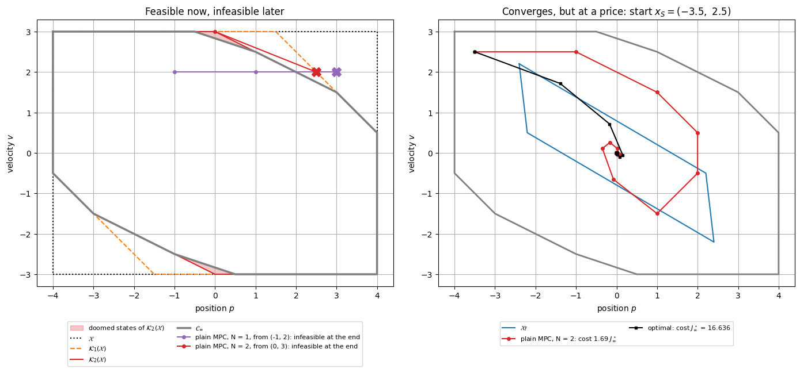
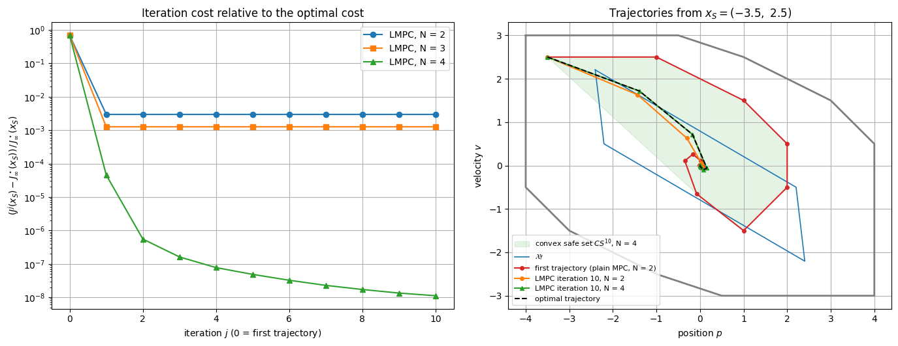

from pathlib import Path
import sys
import numpy as np
import pandas as pd
import matplotlib.pyplot as plt
from scipy.optimize import linprog, nnls
ROOT = Path.cwd().resolve()
if ROOT.name == "notebooks":
ROOT = ROOT.parent
sys.path.insert(0, str(ROOT / "src"))
from advanced_mpc_lmpc.linear import dlqr, prediction_matrices
from advanced_mpc_lmpc.polytopes import (
HPolytope,
closed_loop_admissible_set_scalar_input,
maximal_control_invariant,
maximal_invariant,
n_step_controllable_sets,
)
from advanced_mpc_lmpc.mpc import LinearMPC
from advanced_mpc_lmpc.lmpc import LMPCController, convex_safe_value, trajectory_cost_to_go
from advanced_mpc_lmpc.plotting import plot_polytope
np.set_printoptions(precision=4, suppress=True)
pd.set_option("display.precision", 4)
plt.rcParams.update({
"figure.figsize": (8, 5),
"axes.grid": True,
})Learning objectives
After working through this notebook, you should be able to:
- build LQR terminal ingredients (DARE and maximal positively invariant admissible set) and check the terminal assumptions numerically;
- compute the feasible sets of MPC as controllable sets and explain why they are control invariant;
- verify recursive feasibility and the three Lyapunov conditions on a grid of states, and tell a solver failure apart from an infeasible problem;
- explain what is lost without terminal ingredients, including feasible but doomed states;
- say which features of a Learning MPC learning curve are guaranteed and which are not;
- derive the condensed QP, its KKT conditions, the shifted-sequence and Lyapunov arguments, and the properties of the convex safe set and the barycentric terminal cost;
- reason about model mismatch, disturbances, computation time, soft constraints, estimation, delays and fallbacks.
Table of Contents
- Part A — One design, end to end — A.1 Model, constraints and LQR terminal ingredients · A.2 Feasible sets of MPC with terminal ingredients · A.3 Recursive feasibility and stability on a grid · A.4 Removing the terminal ingredients · A.5 Learning MPC from a poor first trajectory
- Part B — Derivations to reproduce — B.1 The condensed QP · B.2 KKT conditions of the CFTOC · B.3 Recursive feasibility by the shifted sequence · B.4 Lyapunov decrease and the upper bound · B.5 Invariance of the convex safe set · B.6 The barycentric terminal cost
- Part C — Engineering judgment — C.1 Model mismatch · C.2 Disturbances, robust and tube MPC · C.3 Real-time solvers · C.4 Soft constraints and slack penalties · C.5 Estimation and delays · C.6 Safety fallbacks
- Part D — Where to go next — D.1 Robust and stochastic MPC · D.2 Nonlinear and economic MPC · D.3 Learning MPC beyond linear systems · D.4 Data-driven models · D.5 Embedded solvers · D.6 Projects on this repository
- Part E — Summary and references
Part A — One design, end to end
A.1 Model, constraints and LQR terminal ingredients
The state x=(p,v) is position and velocity, sampled with period 1 under a piecewise-constant acceleration u:
x_{k+1}=Ax_k+Bu_k,
\qquad
A=\begin{bmatrix}1&1\\0&1\end{bmatrix},
\qquad
B=\begin{bmatrix}0.5\\1\end{bmatrix}.
Constraints and stage cost are those of notebooks 02 and 08:
\mathcal X=\{x:\ |p|\le4,\ |v|\le3\},
\qquad
\mathcal U=\{u:\ |u|\le1\},
\qquad
q(x,u)=x^\top Qx+u^\top Ru,
\quad
Q=\operatorname{diag}(1,0.2),\ R=0.2 .
The MPC problem at the current state x is
J_N^\star(x)=\min_{u_0,\ldots,u_{N-1}}\ \sum_{k=0}^{N-1}q(x_k,u_k)+V_f(x_N)
\quad\text{s.t.}\quad
\begin{aligned}
&x_0=x,\quad x_{k+1}=Ax_k+Bu_k,\\
&x_k\in\mathcal X\ (k=1,\ldots,N),\quad u_k\in\mathcal U,\quad x_N\in\mathcal X_f,
\end{aligned}
and \mathcal X_N is the set of states of \mathcal X where it is feasible. With a local controller u=-Kx, notebook 03 (Part VI, where the terminal cost is called p) requires:
- \mathcal X_f\subseteq\mathcal X and -Kx\in\mathcal U for all x\in\mathcal X_f;
- (A-BK)x\in\mathcal X_f for all x\in\mathcal X_f;
- V_f\big((A-BK)x\big)-V_f(x)\le-q(x,-Kx) for all x\in\mathcal X_f.
The LQR provides all three. With P the stabilizing solution of the DARE
P=Q+A^\top PA-A^\top PB\,(R+B^\top PB)^{-1}B^\top PA,
\qquad
K=(R+B^\top PB)^{-1}B^\top PA,
the terminal cost V_f(x)=x^\top Px satisfies condition 3 with equality for every x, because the DARE is equivalent to A_K^\top PA_K-P=-(Q+K^\top RK) with A_K=A-BK. For conditions 1 and 2, take \mathcal X_f=\mathcal O_\infty, the maximal positively invariant set of x^+=A_Kx inside \mathcal X_K=\{x\in\mathcal X:\ -Kx\in\mathcal U\}, computed with the recursion of notebook 02,
\mathcal O_0=\mathcal X_K,
\qquad
\mathcal O_{i+1}=\mathcal X_K\cap\{x:\ A_Kx\in\mathcal O_i\},
until \mathcal O_{i+1}=\mathcal O_i. The cell also computes the maximal control-invariant set \mathcal C_\infty: the states from which some admissible input sequence keeps the state in \mathcal X forever.
A = np.array([[1.0, 1.0],
[0.0, 1.0]])
B = np.array([[0.5],
[1.0]])
x_lower, x_upper = np.array([-4.0, -3.0]), np.array([4.0, 3.0])
umin, umax = -1.0, 1.0
X = HPolytope.box(x_lower, x_upper)
Q = np.diag([1.0, 0.2])
R = np.array([[0.2]])
def q(x, u):
# Stage cost x'Qx + u'Ru.
u = np.atleast_1d(u)
return float(x @ Q @ x + u @ R @ u)
def area(S):
# Area of a 2-D polytope (shoelace formula on its ordered vertices).
V = S.vertices_2d()
return 0.5 * abs(V[:, 0] @ np.roll(V[:, 1], -1) - V[:, 1] @ np.roll(V[:, 0], -1))
# LQR terminal controller u = -Kx and terminal cost V_f(x) = x'Px.
K, P, eig_cl = dlqr(A, B, Q, R)
A_K = A - B @ K
dare_residual = (Q + A.T @ P @ A
- A.T @ P @ B @ np.linalg.solve(R + B.T @ P @ B, B.T @ P @ A) - P)
# Terminal set: maximal positively invariant set of x+ = A_K x inside X_K = {x in X : -Kx in U}.
X_K = closed_loop_admissible_set_scalar_input(X, K, umin, umax)
X_f, X_f_history = maximal_invariant(A_K, X_K)
C_inf, _ = maximal_control_invariant(A, B, X, umin, umax)
print("K =", K.ravel())
print("P =\n", P)
print("|eig(A - BK)| =", np.abs(eig_cl), f" ||DARE residual|| = {np.linalg.norm(dare_residual):.1e}")
print("terminal-set iterations:", len(X_f_history) - 1, " vertices of X_f:", len(X_f.vertices_2d()))
print(f"areas: X = {area(X):.2f}, X_K = {area(X_K):.2f}, X_f = {area(X_f):.2f}, C_inf = {area(C_inf):.2f}")
# The terminal conditions at the vertices of X_f. Conditions 1-2 at the vertices imply them on all
# of X_f (convex set, linear maps); condition 3 is an identity in x.
rows = []
for v in X_f.vertices_2d():
u = -K @ v
rows.append({
"p": v[0], "v": v[1], "u=-Kx": u[0],
"x in X": X.contains(v),
"u in U": bool(umin - 1e-9 <= u[0] <= umax + 1e-9),
"A_K x in X_f": X_f.contains(A_K @ v, tol=1e-9),
"decrease residual": (A_K @ v) @ P @ (A_K @ v) - v @ P @ v + q(v, u),
})
print()
print(pd.DataFrame(rows).to_string(index=False))
fig, ax = plt.subplots(figsize=(10, 5.5))
plot_polytope(ax, X, color="k", linestyle=":", label=r"$\mathcal{X}$")
plot_polytope(ax, C_inf, color="tab:gray", linewidth=2, label=r"$\mathcal{C}_\infty$")
plot_polytope(ax, X_K, color="tab:orange", linestyle="--", label=r"$\mathcal{X}_K=\{x\in\mathcal{X}:\ |Kx|\leq 1\}$")
plot_polytope(ax, X_f, color="tab:blue", linewidth=2.5, label=r"$\mathcal{X}_f=\mathcal{O}_\infty$")
for i, v in enumerate(X_f.vertices_2d()):
traj = [v]
for _ in range(6):
traj.append(A_K @ traj[-1])
traj = np.array(traj)
ax.plot(traj[:, 0], traj[:, 1], "o-", color="tab:blue", markersize=3, linewidth=0.8, alpha=0.7,
label="LQR closed loop from the vertices of $\\mathcal{X}_f$" if i == 0 else None)
ax.set_xlabel("position $p$")
ax.set_ylabel("velocity $v$")
ax.set_title("LQR terminal set inside the state constraints")
ax.set_aspect("equal")
ax.legend(loc="center left", bbox_to_anchor=(1.02, 0.5))
plt.tight_layout()
plt.show()K = [0.7396 1.2604]
P =
[[1.7042 0.5 ]
[0.5 0.7021]]
|eig(A - BK)| = [0.3308 0.3308] ||DARE residual|| = 7.1e-16
terminal-set iterations: 2 vertices of X_f: 4
areas: X = 48.00, X_K = 12.66, X_f = 7.31, C_inf = 39.25
p v u=-Kx x in X u in U A_K x in X_f decrease residual
-2.4042 2.2042 -1.0 True True True 1.7764e-15
-2.2042 0.5000 1.0 True True True 1.7764e-15
2.4042 -2.2042 1.0 True True True 1.7764e-15
2.2042 -0.5000 -1.0 True True True 1.7764e-15

Reading the output. The recursion stops after two iterations with a four-vertex parallelogram. Its long edges lie on the lines |Kx|=1 and the LQR input is \pm1 at every vertex: the input bound, not the state box, limits \mathcal X_f. The decrease residual is at machine precision, as the DARE identity predicts. \mathcal X_f covers 7.31 of the 48 units of area of \mathcal X and \mathcal C_\infty covers 39.25, so the finite horizon has to steer into \mathcal X_f from a much larger region.
A.2 Feasible sets of MPC with terminal ingredients
The feasible set of the MPC problem is the N-step controllable set to \mathcal X_f (notebook 02):
\mathcal K_0=\mathcal X_f,
\qquad
\mathcal K_{i+1}=\mathcal X\cap\operatorname{Pre}(\mathcal K_i),
\qquad
\operatorname{Pre}(\mathcal S)=\{x:\ \exists u\in\mathcal U,\ Ax+Bu\in\mathcal S\},
\qquad
\mathcal X_N=\mathcal K_N .
Because \mathcal X_f is control invariant, \mathcal X_f\subseteq\operatorname{Pre}(\mathcal X_f), and induction gives a nested sequence
\mathcal X_f=\mathcal K_0\subseteq\mathcal K_1\subseteq\mathcal K_2\subseteq\cdots\subseteq\mathcal C_\infty .
Each \mathcal K_i is control invariant as well: from x\in\mathcal K_i some admissible input reaches \mathcal K_{i-1}\subseteq\mathcal K_i. This set-level statement is recursive feasibility; Exercise B.3 proves it for input sequences.
N_max = 6
feasible_sets = n_step_controllable_sets(A, B, X, X_f, umin, umax, N_max) # feasible_sets[N] = X_N
rows = []
for N, S in enumerate(feasible_sets):
rows.append({
"N": N,
"area of X_N": area(S),
"fraction of C_inf": area(S) / area(C_inf),
"X_(N-1) inside X_N": N == 0 or all(S.contains(v, 1e-9) for v in feasible_sets[N - 1].vertices_2d()),
"X_N = C_inf": S.approximately_equal(C_inf, 1e-7),
})
print(pd.DataFrame(rows).to_string(index=False))
fig, ax = plt.subplots(figsize=(10, 5.5))
plot_polytope(ax, X, color="k", linestyle=":", label=r"$\mathcal{X}$")
plot_polytope(ax, C_inf, color="tab:gray", linewidth=4, alpha=0.5, label=r"$\mathcal{C}_\infty$")
colors = plt.cm.viridis(np.linspace(0.0, 0.85, 5))
for color, N in zip(colors, [0, 1, 2, 3, 5]):
label = r"$\mathcal{X}_f=\mathcal{X}_0$" if N == 0 else rf"$\mathcal{{X}}_{{{N}}}$"
plot_polytope(ax, feasible_sets[N], color=color, linewidth=1.8, label=label)
ax.set_xlabel("position $p$")
ax.set_ylabel("velocity $v$")
ax.set_title("Feasible sets of MPC with the LQR terminal set")
ax.set_aspect("equal")
ax.legend(loc="center left", bbox_to_anchor=(1.02, 0.5))
plt.tight_layout()
plt.show()N area of X_N fraction of C_inf X_(N-1) inside X_N X_N = C_inf 0 7.3125 0.1863 True False 1 19.3479 0.4929 True False 2 27.6199 0.7037 True False 3 34.3364 0.8748 True False 4 38.0748 0.9701 True False 5 39.2500 1.0000 True True 6 39.2500 1.0000 True True

Reading the output. The sets are nested and grow quickly: about half of \mathcal C_\infty for N=1, 87\% for N=3, and all of it from N=5. From that horizon on, the terminal constraint costs no region of attraction. Below it, states of \mathcal C_\infty\setminus\mathcal X_N are rejected, although some controller could keep them in \mathcal X.
A.3 Recursive feasibility and stability on a grid
What the theory promises (notebook 03, Parts IV.3 and VI; Exercises B.3 and B.4). For every initial state in \mathcal X_N:
- the MPC problem remains feasible at every step;
- the value decreases, J_N^\star(x^+)-J_N^\star(x)\le-q\big(x,\kappa_N(x)\big), where \kappa_N(x)=u_0^\star(x) is the MPC law;
- J_N^\star(x)\ge\lambda_{\min}(Q)\|x\|^2 everywhere and J_N^\star(x)\le V_f(x)\le\lambda_{\max}(P)\|x\|^2 on \mathcal X_f.
These are the three Lyapunov conditions of notebook 03, so the origin is exponentially stable with region of attraction \mathcal X_N. The LQR ingredients add one fact: from x\in\mathcal X_f the LQR plan is admissible and optimal, because P is a fixed point of the Riccati recursion. Hence J_N^\star=V_f and \kappa_N(x)=-Kx on \mathcal X_f: inside the terminal set, the MPC is the LQR.
What we check. Each point of a grid with spacing 0.5 over \mathcal X (17\times13=221 states) that is feasible for N\in\{2,3,5\} starts a 40-step closed loop. We record feasibility, the decrease residual J_N^\star(x^+)-J_N^\star(x)+q(x,u) (theory: \le0) and the entry into \mathcal X_f.
An auditable solver. LinearMPC uses SciPy's SLSQP, which can report failure on degenerate but
feasible QPs (at boundary states of \mathcal X_N, where the feasible input sequences have an empty
interior) and, with its absolute objective tolerance, can stop early near the origin. A failure flag
is not an infeasibility certificate. solve_mpc therefore calls LinearMPC.solve first and, on
failure, solves an LP for the smallest s\ge0 such that some input sequence satisfies all
constraints relaxed by s: s=0 certifies feasibility, s>0 infeasibility. A feasible QP is then
solved exactly: with H=LL^\top and z=L^\top U+L^{-1}f it becomes a least-distance problem, which
one non-negative least-squares problem solves (Lawson and Hanson, 1974), with the constraints relaxed
by 10^{-8} against round-off. Every fallback is logged; the QP data follow Exercise B.1.
FEAS_TOL = 1e-6 # an LP violation above this certifies infeasibility
RELAX = 1e-8 # constraint relaxation in the exact fallback (round-off on the boundary)
def make_mpc(N, terminal=True):
# MPC with the LQR terminal ingredients, or the plain variant: V_f = 0 and no terminal set.
common = dict(x_lower=x_lower, x_upper=x_upper, u_lower=[umin], u_upper=[umax])
if terminal:
return LinearMPC(A, B, Q, R, N=N, P=P, terminal_H=X_f.H, terminal_h=X_f.h, **common)
return LinearMPC(A, B, Q, R, N=N, P=np.zeros((2, 2)), **common)
def qp_data(ctrl, x0):
# Condensed QP of LinearMPC: cost 1/2 U'HU + f'U + c, constraints G U <= w (Exercise B.1).
N, n, m = ctrl.N, ctrl.n, ctrl.m
Qbar = np.kron(np.eye(N), ctrl.Q)
Qbar[-n:, -n:] = ctrl.P
Rbar = np.kron(np.eye(N), ctrl.R)
free = ctrl.Sx @ x0 # predicted states for U = 0
H = 2 * (ctrl.Su.T @ Qbar @ ctrl.Su + Rbar)
f = 2 * ctrl.Su.T @ Qbar @ free
c = x0 @ ctrl.Q @ x0 + free @ Qbar @ free
G = [ctrl.Su, -ctrl.Su, np.eye(N * m), -np.eye(N * m)]
w = [np.tile(ctrl.x_upper, N) - free, free - np.tile(ctrl.x_lower, N),
np.tile(ctrl.u_upper, N), -np.tile(ctrl.u_lower, N)]
if ctrl.terminal_H is not None:
G.append(ctrl.terminal_H @ ctrl.Su[-n:])
w.append(ctrl.terminal_h - ctrl.terminal_H @ free[-n:])
return H, f, c, np.vstack(G), np.concatenate(w)
def min_violation(G, w):
# LP: smallest s >= 0 such that G U <= w + s has a solution (s = 0 <=> the QP is feasible).
nU = G.shape[1]
res = linprog(np.r_[np.zeros(nU), 1.0], A_ub=np.hstack([G, -np.ones((len(w), 1))]), b_ub=w,
bounds=[(None, None)] * nU + [(0.0, None)], method="highs")
return float(res.fun)
def exact_qp(H, f, G, w):
# min 1/2 U'HU + f'U s.t. G U <= w (H > 0), as a least-distance problem solved by NNLS.
L_inv = np.linalg.inv(np.linalg.cholesky(H))
E = G @ L_inv.T # with z = L'U + L^{-1} f: min ||z|| s.t. E z <= d
d = w + E @ (L_inv @ f)
M = -np.vstack([E.T, d])
e = np.r_[np.zeros(E.shape[1]), 1.0]
y, _ = nnls(M, e, maxiter=100 * len(d))
r = M @ y - e
z = -r[:-1] / r[-1]
return L_inv.T @ (z - L_inv @ f)
solver_log = {"slsqp": 0, "fallback": 0, "infeasible": 0}
fallback_cases = [] # (state, LP violation, constraint violation of the answer)
infeasible_margins = [] # LP violation s of every QP certified infeasible
def solve_mpc(ctrl, x, warm=None):
# Returns (U, status), status in {"slsqp", "fallback", "infeasible"}.
sol = ctrl.solve(x, warm=warm)
if sol.success:
status, U = "slsqp", sol.U.ravel()
else:
H, f, c, G, w = qp_data(ctrl, x)
s = min_violation(G, w)
if s > FEAS_TOL:
status, U = "infeasible", None
infeasible_margins.append(s)
else:
status, U = "fallback", exact_qp(H, f, G, w + max(RELAX, 2 * s))
fallback_cases.append((x.copy(), s, float(np.max(G @ U - w))))
solver_log[status] += 1
return U, status
def plan_cost(ctrl, x, U):
# Full cost of the plan U from x: sum of q(x_k, u_k) for k < N plus x_N' P x_N.
H, f, c, _, _ = qp_data(ctrl, x)
return float(0.5 * U @ H @ U + f @ U + c)
def closed_loop(ctrl, x0, steps=40):
# Receding-horizon simulation; warm start = shifted plan completed by the (clipped) LQR step.
x = np.asarray(x0, float)
xs, us, J, status = [x], [], [], []
warm = None
for _ in range(steps):
U, st = solve_mpc(ctrl, x, warm)
status.append(st)
if U is None:
break
J.append(plan_cost(ctrl, x, U))
x_N = ctrl.Sx[-ctrl.n:] @ x + ctrl.Su[-ctrl.n:] @ U
warm = np.r_[U[1:], np.clip(-K @ x_N, umin, umax)]
x = A @ x + B @ U[:1]
xs.append(x)
us.append(U[0])
return {"x": np.array(xs), "u": np.array(us), "J": np.array(J), "status": status,
"lost": status[-1] == "infeasible"}grid = np.array([[p, v] for v in np.arange(-3.0, 3.01, 0.5) for p in np.arange(-4.0, 4.01, 0.5)])
def is_feasible(ctrl, x0):
H, f, c, G, w = qp_data(ctrl, x0)
return min_violation(G, w) <= FEAS_TOL
runs_terminal, rows = {}, []
for N in [2, 3, 5]:
ctrl = make_mpc(N)
log_before = dict(solver_log)
runs = []
for x0 in grid:
if not is_feasible(ctrl, x0):
continue
n_cases = len(fallback_cases)
run = closed_loop(ctrl, x0)
for x, s, viol in fallback_cases[n_cases:]:
print(f"N = {N}, start {x0}: fallback at x = {np.round(x, 6)}, LP violation s = {s:.1e}, "
f"constraint violation of the exact solution = {viol:.1e}")
stage = np.array([q(x, u) for x, u in zip(run["x"][:-1], run["u"])])
run["residual"] = run["J"][1:] - run["J"][:-1] + stage[:-1]
run["enter_Xf"] = next((t for t, x in enumerate(run["x"]) if X_f.contains(x, 1e-9)), np.inf)
runs.append(run)
runs_terminal[N] = runs
solves = {k: solver_log[k] - log_before[k] for k in solver_log}
rows.append({
"N": N,
"feasible starts": len(runs),
"lost feasibility": sum(r["lost"] for r in runs),
"max decrease residual": max(r["residual"].max() for r in runs),
"max steps to X_f": max(r["enter_Xf"] for r in runs),
"max |x_40|": max(np.linalg.norm(r["x"][-1]) for r in runs),
"QPs solved": sum(solves.values()),
"SLSQP fallbacks": solves["fallback"],
})
print(f"grid states: {len(grid)}")
print(pd.DataFrame(rows).to_string(index=False))
# Upper bound on X_f: random states of X_f, compare J_N^*(x) with V_f(x) and the MPC input with -Kx.
rng = np.random.default_rng(0)
V_Xf = X_f.vertices_2d()
samples = [x for x in rng.uniform(V_Xf.min(axis=0), V_Xf.max(axis=0), size=(1000, 2)) if X_f.contains(x)][:200]
ctrl3 = make_mpc(3)
value_gap, input_gap = [], []
for x in samples:
U, _ = solve_mpc(ctrl3, x)
value_gap.append(abs(plan_cost(ctrl3, x, U) - x @ P @ x))
input_gap.append(abs(U[0] + (K @ x)[0]))
print(f"\n{len(samples)} random states of X_f, N = 3: max |J_N^* - V_f| = {max(value_gap):.1e},"
f" max |u_0^* + Kx| = {max(input_gap):.1e}")
print(f"lambda_min(Q) = {np.linalg.eigvalsh(Q).min():.3f}, lambda_max(P) = {np.linalg.eigvalsh(P).max():.3f}")N = 5, start [1. 2.5]: fallback at x = [4. 0.5], LP violation s = 0.0e+00, constraint violation of the exact solution = 1.0e-08 grid states: 221 N feasible starts lost feasibility max decrease residual max steps to X_f max |x_40| QPs solved SLSQP fallbacks 2 117 0 1.0658e-14 3 1.3901e-18 4680 0 3 147 0 2.8422e-14 4 8.6524e-18 5880 0 5 177 0 5.2633e-08 6 4.4611e-17 7080 1 200 random states of X_f, N = 3: max |J_N^* - V_f| = 4.4e-09, max |u_0^* + Kx| = 4.4e-05 lambda_min(Q) = 0.200, lambda_max(P) = 1.911
fig, axes = plt.subplots(1, 2, figsize=(14, 5.2))
ax = axes[0]
plot_polytope(ax, X, color="k", linestyle=":", label=r"$\mathcal{X}$")
plot_polytope(ax, feasible_sets[3], color="tab:green", linewidth=2, label=r"$\mathcal{X}_3$")
plot_polytope(ax, X_f, color="tab:blue", linewidth=2, label=r"$\mathcal{X}_f$")
for i, r in enumerate(runs_terminal[3]):
ax.plot(r["x"][:, 0], r["x"][:, 1], color="tab:red", linewidth=0.6, alpha=0.5,
label="closed loops, $N=3$" if i == 0 else None)
starts = np.array([r["x"][0] for r in runs_terminal[3]])
ax.plot(starts[:, 0], starts[:, 1], "k.", markersize=4, label="feasible grid starts")
ax.set_xlabel("position $p$")
ax.set_ylabel("velocity $v$")
ax.set_title("Every feasible start stays feasible and converges")
ax.set_aspect("equal")
ax.legend(loc="lower left", fontsize=8)
ax = axes[1]
for i, r in enumerate(runs_terminal[3]):
if r["J"][0] > 0:
ax.semilogy(r["J"], color="tab:red", linewidth=0.6, alpha=0.5,
label=r"$J_3^\star(x(t))$ along each closed loop" if i == 0 else None)
rho = np.max(np.abs(eig_cl))
t = np.arange(0, 21)
ax.semilogy(t, 50 * rho ** (2 * t), "k--", label=r"slope of $\rho(A-BK)^{2t}$")
ax.set_xlim(0, 20)
ax.set_ylim(1e-10, 1e2)
ax.set_xlabel("time step $t$")
ax.set_ylabel("optimal value")
ax.set_title("The optimal value is a Lyapunov function")
ax.legend(loc="upper right")
plt.tight_layout()
plt.show()
Reading the output. For N=2, 3 and 5 the grid has 117, 147 and 177 feasible starts (for N=5, every grid state of \mathcal C_\infty). Every closed loop stayed feasible and entered \mathcal X_f within 3, 4 and 6 steps, after which the value decays with the slope of \rho(A-BK)^{2t}, \rho(A-BK)=0.331 (right panel). The largest decrease residual over all 17\,640 closed-loop QPs is 5.3\times10^{-8}, zero up to solver tolerance. On 200 random states of \mathcal X_f, J_3^\star matches V_f to 4\times10^{-9} and the first input matches -Kx to 4\times10^{-5} (the tolerance acts on the objective, which is quadratic in the input error): the upper bound holds with equality.
One QP needed the fallback, at x=(4,0.5), a vertex of \mathcal C_\infty reached from (1,2.5) with N=5. The position is at its bound with the velocity pointing outward, so p_1=4.5+0.5u_0\le4 forces u_0=-1; the feasible input sequences lie in a hyperplane, and SLSQP declared the constraints incompatible. The LP certified feasibility (s=0), and the exact solver returned a plan within the 10^{-8} relaxation. This is a solver artefact, not a counterexample to recursive feasibility.
A.4 Removing the terminal ingredients
The textbook variant drops both ingredients, V_f=0 and no terminal set:
J_N^{0}(x)=\min_{u_0,\ldots,u_{N-1}}\ \sum_{k=0}^{N-1}q(x_k,u_k)
\quad\text{s.t.}\quad
x_{k+1}=Ax_k+Bu_k,\ \ x_k\in\mathcal X\ (k=1,\ldots,N),\ \ u_k\in\mathcal U .
Its feasible set is \mathcal K_N(\mathcal X), the states that can be kept in \mathcal X for N steps (the recursion of A.2 started from \mathcal K_0=\mathcal X). This sequence shrinks towards \mathcal C_\infty, and for short horizons it contains doomed states: the QP is feasible now, yet every admissible input sequence leaves \mathcal X eventually. None of the proofs of A.3 applies.
The cell runs the plain controller from the grid for N=1,\ldots,5. A run counts as converged if it stays feasible and \|x_{40}\|\le10^{-3} (without the LQR step in its warm start, SLSQP stalls near 10^{-4}, which says nothing about the controller). Costs are compared with J_\infty^\star(x_0), sandwiched between J_{12}^\star of the terminal design, an upper bound because its plan followed by the LQR is admissible, and J_{30}^0 of the plain problem, a lower bound because it drops the tail.
# Reference: J_inf^*(x0) for every grid state of C_inf, sandwiched between two finite-horizon values.
ref_upper, ref_lower = make_mpc(12), make_mpc(30, terminal=False)
log_before = dict(solver_log)
J_inf, sandwich_gap = {}, 0.0
for x0 in grid:
if C_inf.contains(x0, 1e-9):
upper = plan_cost(ref_upper, x0, solve_mpc(ref_upper, x0)[0])
lower = plan_cost(ref_lower, x0, solve_mpc(ref_lower, x0)[0])
J_inf[tuple(x0)] = upper
sandwich_gap = max(sandwich_gap, upper - lower)
print(f"J_inf^* on {len(J_inf)} grid states of C_inf: max(upper - lower) = {sandwich_gap:.1e}, "
f"fallbacks needed: {solver_log['fallback'] - log_before['fallback']}")
def cost_ratio(run):
# Closed-loop cost over the simulated steps divided by J_inf^*(x0).
return sum(q(x, u) for x, u in zip(run["x"][:-1], run["u"])) / J_inf[tuple(run["x"][0])]
# K_0 = X, K_(N+1) = X n Pre(K_N): the states that can be kept in X for N more steps.
plain_sets = n_step_controllable_sets(A, B, X, X, umin, umax, 5) # plain_sets[N] = K_N(X)
runs_plain, rows, mismatches = {}, [], 0
log_before = dict(solver_log)
for N in range(1, 6):
ctrl = make_mpc(N, terminal=False)
runs = []
for x0 in grid:
feasible = is_feasible(ctrl, x0)
mismatches += feasible != plain_sets[N].contains(x0, 1e-9)
if not feasible:
continue
run = closed_loop(ctrl, x0)
run["doomed"] = not C_inf.contains(x0, 1e-9)
run["converged"] = not run["lost"] and np.linalg.norm(run["x"][-1]) <= 1e-3
if run["converged"] and np.linalg.norm(x0) > 0:
run["ratio"] = cost_ratio(run)
runs.append(run)
runs_plain[N] = runs
ratios = [r["ratio"] for r in runs if "ratio" in r]
rows.append({
"N": N,
"area K_N(X)": area(plain_sets[N]),
"doomed area": area(plain_sets[N]) - area(C_inf),
"feasible starts": len(runs),
"doomed starts": sum(r["doomed"] for r in runs),
"lost, start in C_inf": sum(r["lost"] and not r["doomed"] for r in runs),
"lost, doomed start": sum(r["lost"] and r["doomed"] for r in runs),
"feasible, no convergence": sum(not r["lost"] and not r["converged"] for r in runs),
"worst cost/J_inf": max(ratios) if ratios else np.nan,
"starts > 1.2 J_inf": sum(r > 1.2 for r in ratios),
})
print(pd.DataFrame(rows).to_string(index=False))
print(f"\ngrid states where membership in K_N(X) and the LP feasibility test disagree: {mismatches}")
print("doomed grid starts accepted by the plain MPC with N = 2:",
[(float(r["x"][0][0]), float(r["x"][0][1])) for r in runs_plain[2] if r["doomed"]])
print(f"QPs certified infeasible: {solver_log['infeasible'] - log_before['infeasible']}, smallest LP violation "
f"among them: {min(infeasible_margins):.2f}; SLSQP fallbacks: {solver_log['fallback'] - log_before['fallback']}")
for N in [2, 3, 5]:
worst = max(cost_ratio(r) for r in runs_terminal[N] if np.linalg.norm(r["x"][0]) > 0)
print(f"terminal design, N = {N}: worst cost/J_inf over its feasible grid starts = {worst:.4f}")
for N in [2, 3]:
steps = violations = increases = 0
for r in runs_plain[N]:
if r["lost"]:
continue
stage = np.array([q(x, u) for x, u in zip(r["x"][:-1], r["u"])])
away = np.linalg.norm(r["x"][:len(r["J"]) - 1], axis=1) > 1e-2 # ignore solver noise near 0
dJ = r["J"][1:] - r["J"][:-1]
steps += int(away.sum())
violations += int(np.sum((dJ + stage[:len(dJ)] > 1e-9) & away))
increases += int(np.sum((dJ > 1e-9) & away))
print(f"plain design, N = {N}: at the {steps} steps with |x| > 0.01, the decrease inequality is "
f"violated {violations} times and the value increases {increases} times")J_inf^* on 177 grid states of C_inf: max(upper - lower) = 6.9e-09, fallbacks needed: 0 N area K_N(X) doomed area feasible starts doomed starts lost, start in C_inf lost, doomed start feasible, no convergence worst cost/J_inf starts > 1.2 J_inf 1 41.75 2.50 191 14 100 14 76 NaN 0 2 39.50 0.25 179 2 0 2 0 2.1459 24 3 39.25 0.00 177 0 0 0 0 1.0945 0 4 39.25 0.00 177 0 0 0 0 1.0032 0 5 39.25 0.00 177 0 0 0 0 1.0000 0 grid states where membership in K_N(X) and the LP feasibility test disagree: 0 doomed grid starts accepted by the plain MPC with N = 2: [(0.0, -3.0), (0.0, 3.0)] QPs certified infeasible: 116, smallest LP violation among them: 0.17; SLSQP fallbacks: 9 terminal design, N = 2: worst cost/J_inf over its feasible grid starts = 1.0010 terminal design, N = 3: worst cost/J_inf over its feasible grid starts = 1.0000 terminal design, N = 5: worst cost/J_inf over its feasible grid starts = 1.0000 plain design, N = 2: at the 2060 steps with |x| > 0.01, the decrease inequality is violated 2060 times and the value increases 118 times plain design, N = 3: at the 1352 steps with |x| > 0.01, the decrease inequality is violated 1352 times and the value increases 42 times
fig, axes = plt.subplots(1, 2, figsize=(14, 6.6))
ax = axes[0]
V2 = plain_sets[2].vertices_2d()
ax.fill(V2[:, 0], V2[:, 1], color="tab:red", alpha=0.25, label=r"doomed states of $\mathcal{K}_2(\mathcal{X})$")
Vc = C_inf.vertices_2d()
ax.fill(Vc[:, 0], Vc[:, 1], color="white")
plot_polytope(ax, X, color="k", linestyle=":", label=r"$\mathcal{X}$")
plot_polytope(ax, plain_sets[1], color="tab:orange", linestyle="--", label=r"$\mathcal{K}_1(\mathcal{X})$")
plot_polytope(ax, plain_sets[2], color="tab:red", label=r"$\mathcal{K}_2(\mathcal{X})$")
plot_polytope(ax, C_inf, color="tab:gray", linewidth=2.5, label=r"$\mathcal{C}_\infty$")
examples = [(1, np.array([-1.0, 2.0]), "tab:purple"), (2, np.array([0.0, 3.0]), "tab:red")]
for N, x0, color in examples:
r = closed_loop(make_mpc(N, terminal=False), x0)
ax.plot(r["x"][:, 0], r["x"][:, 1], "o-", color=color, markersize=4,
label=f"plain MPC, N = {N}, from ({x0[0]:g}, {x0[1]:g})" + (": infeasible at the end" if r["lost"] else ""))
ax.plot(*r["x"][-1], "X", color=color, markersize=12)
ax.set_xlabel("position $p$")
ax.set_ylabel("velocity $v$")
ax.set_title("Feasible now, infeasible later")
ax.set_aspect("equal")
ax.legend(loc="upper center", bbox_to_anchor=(0.5, -0.12), ncol=2, fontsize=8)
ax = axes[1]
x_S = np.array([-3.5, 2.5])
r_plain = closed_loop(make_mpc(2, terminal=False), x_S)
r_opt = closed_loop(make_mpc(12), x_S)
plot_polytope(ax, C_inf, color="tab:gray", linewidth=2)
plot_polytope(ax, X_f, color="tab:blue", linewidth=1.5, label=r"$\mathcal{X}_f$")
ax.plot(r_plain["x"][:, 0], r_plain["x"][:, 1], "o-", color="tab:red", markersize=4,
label=f"plain MPC, N = 2: cost {cost_ratio(r_plain):.2f} $J_\\infty^\\star$")
ax.plot(r_opt["x"][:, 0], r_opt["x"][:, 1], "s-", color="k", markersize=3,
label=f"optimal: cost $J_\\infty^\\star$ = {J_inf[tuple(x_S)]:.3f}")
ax.set_xlabel("position $p$")
ax.set_ylabel("velocity $v$")
ax.set_title(r"Converges, but at a price: start $x_S=(-3.5,\ 2.5)$")
ax.set_aspect("equal")
ax.legend(loc="upper center", bbox_to_anchor=(0.5, -0.12), ncol=2, fontsize=8)
plt.tight_layout()
plt.show()
Reading the output. The two bounds on J_\infty^\star differ by at most 6.9\times10^{-9}, the sets \mathcal K_N(\mathcal X) agree with the LP test at every grid state, and each of the 116 infeasible QPs violates its constraints by at least 0.17, far from any tolerance.
- N=1 fails badly. u_0=0 minimizes q(x_0,u_0) whenever Ax\in\mathcal X, so the controller coasts until a bound forces it to brake, then brakes as little as possible. States (p,0) are equilibria and moving states coast from wall to wall, so 76 feasible starts never converge, and from 100 of the 177 starts in \mathcal C_\infty it coasts into a state where one braking step is not enough: from (-1,2) to (3,2), where p_1=5+0.5u\le4 would need u\le-2. All 14 doomed starts fail too.
- N=2 accepts doomed states. Both doomed grid starts, (0,\pm3), in the shaded slivers of area 0.25, lose feasibility. Every start in \mathcal C_\infty converges, but at up to 2.15\,J_\infty^\star, and 24 starts pay more than 20\% extra. From x_S=(-3.5,2.5) the controller keeps its speed too long, overshoots to p=2 and spirals back, at 1.69\,J_\infty^\star. With the terminal ingredients and the same N, the worst ratio is 1.0010.
- From N=3 on, nothing visibly goes wrong. \mathcal K_3(\mathcal X)=\mathcal C_\infty, and the worst costs are 1.0945, 1.0032 and 1.0000 times J_\infty^\star for N=3,4,5.
What is lost is the certificate. With V_f=0 the principle of optimality gives J_N^0(x)=q(x,u_0^\star)+J_{N-1}^0(x^+), hence
J_N^0(x^+)-J_N^0(x)+q(x,u_0^\star)=J_N^0(x^+)-J_{N-1}^0(x^+)\ \ge\ 0,
because with a zero terminal cost a longer horizon can only add cost (notebook 08, Part V). The decrease inequality of A.3 holds with the wrong sign. It fails at all 2060 (N=2) and 1352 (N=3) steps away from the origin, and the value even increases at 118 and 42 of them. Proofs for MPC without terminal ingredients exist, but they need a long enough horizon and controllability assumptions (Part D). The terminal ingredients give the guarantee at every horizon.
A.5 Learning MPC from a poor first trajectory
Learning MPC (notebook 05) replaces the designed terminal ingredients by data. The task is repeated from the same initial state x_S. The states of every trajectory that reached the target become rows of a matrix S, and their realized costs-to-go form a vector \mathbf J. Iteration j solves
\min_{u_0,\ldots,u_{N-1},\,\lambda}\ \sum_{k=0}^{N-1}q(x_k,u_k)+\mathbf J^\top\lambda
\quad\text{s.t.}\quad
\begin{aligned}
&x_0=x,\quad x_{k+1}=Ax_k+Bu_k,\quad x_k\in\mathcal X,\quad u_k\in\mathcal U,\\
&x_N=S^\top\lambda,\quad \mathbf 1^\top\lambda=1,\quad \lambda\ge0 .
\end{aligned}
The terminal set is the convex safe set CS^j, the convex hull of the stored states, and the terminal cost is the barycentric value V_c^j(x_N)=\min\{\mathbf J^\top\lambda:\ S^\top\lambda=x_N,\ \mathbf 1^\top\lambda=1,\ \lambda\ge0\} (Exercises B.5 and B.6). For linear dynamics, convex constraints and a convex stage cost, notebook 05 shows that every iteration is recursively feasible and converges to the target; that J^{j+1}(x_S)\le J^j(x_S), because the previous trajectory remains a feasible candidate; and, since each iteration is admissible, J^j(x_S)\ge J_\infty^\star(x_S). The costs therefore converge, but convergence to J_\infty^\star is not among the guarantees.
Setup. x_S=(-3.5,2.5), and the first trajectory is the plain N=2 closed loop of A.4, feasible but at 1.69\,J_\infty^\star. As in notebook 05, stored trajectories must end exactly at the target, so each run stops once \|x\|\le10^{-3} and is completed by the two inputs [u_0;\,u_1]=-[AB\ \ B]^{-1}A^2x, which reach the origin exactly. LMPC then runs 10 iterations for each N\in\{2,3,4\} with all stored data.
def complete_to_origin(X_list, U_list):
# Two-step deadbeat completion [AB B][u0; u1] = -A^2 x, which reaches x = 0 exactly.
x = X_list[-1]
for u in np.linalg.solve(np.column_stack([A @ B, B]), -A @ A @ x):
assert umin <= u <= umax
U_list.append(np.array([u]))
X_list.append(A @ X_list[-1] + B[:, 0] * u)
assert X.contains(X_list[-1])
X_list[-1] = np.zeros(2) # remove round-off: the stored trajectory ends at the target
return np.array(X_list), np.array(U_list)
def lmpc_iteration(lmpc, x0, max_steps=60):
# One execution of the task with LMPC; the successful trajectory is added to the data.
x, X_list, U_list, warm = x0.copy(), [x0.copy()], [], None
while np.linalg.norm(x) > 1e-3:
sol = lmpc.solve(x, warm=warm)
if not sol.success or len(U_list) == max_steps:
raise RuntimeError(f"LMPC failed at x = {x}: {sol.message}")
x = A @ x + B @ sol.U[0]
X_list.append(x)
U_list.append(sol.U[0].copy())
warm = lmpc.shifted_warm_start(x, sol)
X_traj, U_traj = complete_to_origin(X_list, U_list)
lmpc.add_trajectory(X_traj, U_traj)
return X_traj
x_S = np.array([-3.5, 2.5])
J_star = J_inf[tuple(x_S)]
# First trajectory: the plain N = 2 closed loop of A.4, completed exactly to the origin.
r = closed_loop(make_mpc(2, terminal=False), x_S)
T = next(t for t, x in enumerate(r["x"]) if np.linalg.norm(x) <= 1e-3)
X_seed, U_seed = complete_to_origin(list(r["x"][:T + 1]), [np.array([u]) for u in r["u"][:T]])
lmpc_runs = {}
for N in [2, 3, 4]:
lmpc = LMPCController(A, B, Q, R, N=N, x_lower=x_lower, x_upper=x_upper,
u_lower=[umin], u_upper=[umax])
lmpc.add_trajectory(X_seed, U_seed)
trajectories = [X_seed] + [lmpc_iteration(lmpc, x_S) for _ in range(10)]
lmpc_runs[N] = {"lmpc": lmpc, "trajectories": trajectories, "costs": np.array(lmpc.iteration_costs)}
print(f"J_inf^*(x_S) = {J_star:.6f}; first trajectory: {len(U_seed)} steps, cost {lmpc_runs[2]['costs'][0]:.6f}")
table = pd.DataFrame({f"N = {N}: (J^j - J*)/J*": (run["costs"] - J_star) / J_star for N, run in lmpc_runs.items()})
table.index.name = "iteration j"
print(table.to_string(float_format=lambda v: f"{v:.2e}"))
for N, run in lmpc_runs.items():
print(f"N = {N}: J^10 = {run['costs'][-1]:.6f}, largest increase J^(j+1) - J^j = {np.max(np.diff(run['costs'])):.1e}, "
f"stored states = {len(run['lmpc'].safe_data()[0])}")J_inf^*(x_S) = 16.636215; first trajectory: 20 steps, cost 28.086699
N = 2: (J^j - J*)/J* N = 3: (J^j - J*)/J* N = 4: (J^j - J*)/J*
iteration j
0 6.88e-01 6.88e-01 6.88e-01
1 2.97e-03 1.27e-03 4.55e-05
2 2.97e-03 1.27e-03 5.52e-07
3 2.97e-03 1.27e-03 1.61e-07
4 2.97e-03 1.27e-03 7.74e-08
5 2.97e-03 1.27e-03 4.85e-08
6 2.97e-03 1.27e-03 3.23e-08
7 2.97e-03 1.27e-03 2.27e-08
8 2.97e-03 1.27e-03 1.71e-08
9 2.97e-03 1.27e-03 1.34e-08
10 2.97e-03 1.27e-03 1.11e-08
N = 2: J^10 = 16.685579, largest increase J^(j+1) - J^j = 2.5e-12, stored states = 101
N = 3: J^10 = 16.657260, largest increase J^(j+1) - J^j = 9.9e-09, stored states = 130
N = 4: J^10 = 16.636215, largest increase J^(j+1) - J^j = -3.7e-08, stored states = 131
# Is the N = 2 plateau a solver artefact? Minimize the N = 2 LMPC objective at x_S by brute force:
# a grid search over (u0, u1), refined three times, with V_c evaluated by its LP at every point.
lmpc2 = lmpc_runs[2]["lmpc"]
S2, V2_values, _, _ = lmpc2.safe_data()
def lmpc_objective(u):
x1 = A @ x_S + B[:, 0] * u[0]
x2 = A @ x1 + B[:, 0] * u[1]
if np.any(np.abs(u) > umax) or not (X.contains(x1) and X.contains(x2)):
return np.inf
value, _, ok = convex_safe_value(x2, S2, V2_values)
return q(x_S, u[0]) + q(x1, u[1]) + value if ok else np.inf
sol2 = lmpc2.solve(x_S)
best_u, best = sol2.U.ravel(), lmpc_objective(sol2.U.ravel())
for h in [0.1, 0.01, 0.001]:
center = best_u.copy()
for a in np.linspace(-1, 1, 15):
for b in np.linspace(-1, 1, 15):
u = center + h * np.array([a, b])
value = lmpc_objective(u)
if value < best:
best_u, best = u, value
print(f"N = 2 at x_S: LMPC (SLSQP) objective = {sol2.objective:.9f}, brute-force minimum = {best:.9f}")
print(f"J^10 for N = 2: {lmpc_runs[2]['costs'][-1]:.9f}")
fig, axes = plt.subplots(1, 2, figsize=(14, 5.4))
ax = axes[0]
markers = {2: "o", 3: "s", 4: "^"}
for N, run in lmpc_runs.items():
ax.semilogy(np.arange(len(run["costs"])), (run["costs"] - J_star) / J_star, marker=markers[N],
label=f"LMPC, N = {N}")
ax.set_xlabel("iteration $j$ (0 = first trajectory)")
ax.set_ylabel(r"$(J^j(x_S)-J_\infty^\star(x_S))\,/\,J_\infty^\star(x_S)$")
ax.set_title("Iteration cost relative to the optimal cost")
ax.legend()
ax = axes[1]
stored = np.vstack(lmpc_runs[4]["trajectories"])
hull = HPolytope.from_vertices_2d(stored)
V_hull = hull.vertices_2d()
ax.fill(V_hull[:, 0], V_hull[:, 1], color="tab:green", alpha=0.12, label="convex safe set $CS^{10}$, N = 4")
plot_polytope(ax, C_inf, color="tab:gray", linewidth=2)
plot_polytope(ax, X_f, color="tab:blue", linewidth=1.2, label=r"$\mathcal{X}_f$")
ax.plot(X_seed[:, 0], X_seed[:, 1], "o-", color="tab:red", markersize=4, label="first trajectory (plain MPC, N = 2)")
for N, color in [(2, "tab:orange"), (4, "tab:green")]:
Xl = lmpc_runs[N]["trajectories"][-1]
ax.plot(Xl[:, 0], Xl[:, 1], markers[N] + "-", color=color, markersize=4, label=f"LMPC iteration 10, N = {N}")
ax.plot(r_opt["x"][:12, 0], r_opt["x"][:12, 1], "k--", linewidth=1.5, label="optimal trajectory")
ax.set_xlabel("position $p$")
ax.set_ylabel("velocity $v$")
ax.set_title(r"Trajectories from $x_S=(-3.5,\ 2.5)$")
ax.set_aspect("equal")
ax.legend(loc="lower left", fontsize=8)
plt.tight_layout()
plt.show()N = 2 at x_S: LMPC (SLSQP) objective = 16.685578863, brute-force minimum = 16.685578863 J^10 for N = 2: 16.685578863

Reading the output. The first trajectory costs 28.087, that is 1.69\,J_\infty^\star(x_S) with J_\infty^\star(x_S)=16.636. For every horizon, one iteration removes almost all of the excess, and no cost increases afterwards, as guaranteed: the largest increase is 9.9\times10^{-9}, at solver tolerance. Then the horizons part ways. With N=4 the gap keeps falling, to 1.1\times10^{-8}, and the trajectory joins the optimal one. With N=3 and N=2 it stalls after the first iteration, at 1.27\times10^{-3} and 2.97\times10^{-3}. The brute-force search confirms that the plateau is not a solver artefact: with the data of iteration 10, the best N=2 plan at x_S costs exactly J^{10}=16.685579, the cost of the stored trajectory.
The guarantees say nothing about the limit, and notebook 05 (Part XX) already warned that feasibility alone gives no optimality guarantee. The mechanism is the terminal cost. To improve, a plan must leave the stored trajectory and end elsewhere in CS^j, where V_c^j interpolates the costs of suboptimal trajectories and over-estimates the optimal cost-to-go (Exercise B.6). A gain that appears only later in the tail is invisible to a short plan, while a longer horizon optimizes more of the tail explicitly. Even so, the N=2 limit is only 0.30\% above the optimum, against 69\% for the trajectory that produced the first data.
Part B — Derivations to reproduce
Each exercise is a derivation that Part A relied on. Work it out before opening the answer.
B.1 The condensed QP
Exercise. Eliminate the states from the MPC problem of A.1 and write it as \min_U\ \tfrac12U^\top HU+f^\top U+c subject to GU\le w. Show that H\succ0 and say which quantities depend on the current state x_0.
Answer
Stack \mathbf x=(x_1,\ldots,x_N) and U=(u_0,\ldots,u_{N-1}). The dynamics give
\mathbf x=S_xx_0+S_uU (prediction_matrices), with
S_x=\begin{bmatrix}A\\A^2\\\vdots\\A^N\end{bmatrix},
\qquad
S_u=\begin{bmatrix}B&0&\cdots&0\\AB&B&\cdots&0\\\vdots&&\ddots&\vdots\\A^{N-1}B&A^{N-2}B&\cdots&B\end{bmatrix}.
With \bar Q=\operatorname{blkdiag}(Q,\ldots,Q,P) and \bar R=\operatorname{blkdiag}(R,\ldots,R), the cost is x_0^\top Qx_0+\mathbf x^\top\bar Q\mathbf x+U^\top\bar RU, and substitution gives
H=2\,(S_u^\top\bar QS_u+\bar R),
\qquad
f=2\,S_u^\top\bar QS_xx_0,
\qquad
c=x_0^\top Qx_0+x_0^\top S_x^\top\bar QS_xx_0 .
With S_u^{(N)} the last block row of S_u and \mathcal X_f=\{x:\ H_fx\le h_f\}, the constraints are
\begin{bmatrix}S_u\\-S_u\\I\\-I\\H_fS_u^{(N)}\end{bmatrix}U
\le
\begin{bmatrix}\mathbf 1\otimes x_{\max}-S_xx_0\\S_xx_0-\mathbf 1\otimes x_{\min}\\\mathbf 1\otimes u_{\max}\\-\mathbf 1\otimes u_{\min}\\h_f-H_fA^Nx_0\end{bmatrix}.
H\succ0 because \bar R\succ0 and S_u^\top\bar QS_u\succeq0, so a feasible QP has a unique
minimizer. H and G are fixed, f and w are affine in x_0, and c is quadratic: the MPC
problem is a multiparametric QP in x_0, which is why the MPC law is piecewise affine (explicit
MPC). LinearMPC.solve omits c, so its objective is not J_N^\star; qp_data of A.3 adds it
back.
The cell checks the formulas against direct rollouts at x_S with N=5.
ctrl5 = make_mpc(5)
H, f, c, G, w = qp_data(ctrl5, x_S)
rng = np.random.default_rng(1)
cost_error, agree = 0.0, 0
for _ in range(1000):
U = rng.uniform(umin, umax, size=5)
xs = [x_S]
for u in U:
xs.append(A @ xs[-1] + B[:, 0] * u)
direct = sum(q(x, u) for x, u in zip(xs[:-1], U)) + xs[-1] @ P @ xs[-1]
cost_error = max(cost_error, abs(0.5 * U @ H @ U + f @ U + c - direct))
admissible = all(X.contains(x, 1e-12) for x in xs[1:]) and X_f.contains(xs[-1], 1e-12)
agree += admissible == bool(np.all(G @ U <= w + 1e-12))
sol = ctrl5.solve(x_S)
print(f"G has {G.shape[0]} rows; smallest eigenvalue of H = {np.linalg.eigvalsh(H).min():.3f}")
print(f"1000 random U: max |condensed cost - rollout cost| = {cost_error:.1e}, "
f"constraint test agrees with the rollout in {agree} cases")
print(f"LinearMPC objective + c = {sol.objective + c:.6f}, J_5^*(x_S) = {plan_cost(ctrl5, x_S, sol.U.ravel()):.6f}")G has 34 rows; smallest eigenvalue of H = 0.526 1000 random U: max |condensed cost - rollout cost| = 4.5e-13, constraint test agrees with the rollout in 1000 cases LinearMPC objective + c = 16.636215, J_5^*(x_S) = 16.636215
B.2 KKT conditions of the CFTOC
Exercise. Write the KKT conditions (a) of the condensed QP and (b) of the problem with the states kept as variables and multipliers \lambda_{k+1} for the dynamics. Show that without inequality constraints (b) reduces to the Riccati recursion, and interpret the inequality multipliers.
Answer
(a) U^\star is optimal if and only if there is \mu with
HU^\star+f+G^\top\mu=0,
\qquad
GU^\star\le w,
\qquad
\mu\ge0,
\qquad
\mu_i\,(w-GU^\star)_i=0\ \ \text{for all } i .
With affine constraints these conditions are necessary and sufficient. U^\star is unique because H\succ0; \mu need not be, for instance when the active constraints are linearly dependent.
(b) With G_xx_k\le g_x, G_uu_k\le g_u and \mathcal X_f=\{H_fx\le h_f\}, stationarity of the Lagrangian reads
\begin{aligned}
u_k:&\quad 2Ru_k+B^\top\lambda_{k+1}+G_u^\top\nu_k=0, && k=0,\ldots,N-1,\\
x_k:&\quad \lambda_k=2Qx_k+A^\top\lambda_{k+1}+G_x^\top\mu_k, && k=1,\ldots,N-1,\\
x_N:&\quad \lambda_N=2Px_N+G_x^\top\mu_N+H_f^\top\eta,
\end{aligned}
plus primal feasibility, \mu_k,\nu_k,\eta\ge0 and complementary slackness: the costates run backwards, as in the discrete-time maximum principle. Without inequalities, try \lambda_k=2P_kx_k. The u_k-condition gives u_k=-(R+B^\top P_{k+1}B)^{-1}B^\top P_{k+1}Ax_k, and the x_k-condition then gives P_k=Q+A^\top P_{k+1}A-A^\top P_{k+1}B(R+B^\top P_{k+1}B)^{-1}B^\top P_{k+1}A with P_N=P: the Riccati recursion. With P from the DARE, P_k=P for all k, which is why the MPC equals the LQR inside \mathcal X_f.
A multiplier is the price of its constraint: if the active set does not change, \partial J_N^\star/\partial w_i=-\mu_i, so relaxing constraint i by \varepsilon lowers the optimal cost by about \mu_i\varepsilon. C.4 uses this to size slack penalties.
The cell recovers \mu at x_S (N=5) from the active constraints and checks the price interpretation by re-solving with one bound relaxed.
names = ([f"{s}_{k} <= max" for k in range(1, 6) for s in ("p", "v")]
+ [f"{s}_{k} >= min" for k in range(1, 6) for s in ("p", "v")]
+ [f"u_{k} <= 1" for k in range(5)] + [f"u_{k} >= -1" for k in range(5)]
+ [f"terminal row {j}" for j in range(len(X_f.h))])
U_opt = exact_qp(H, f, G, w) # exact solution (A.3), so KKT holds to round-off
J_opt = 0.5 * U_opt @ H @ U_opt + f @ U_opt + c
gradient = H @ U_opt + f
active = np.flatnonzero(w - G @ U_opt <= 1e-9)
mu_active, _ = nnls(G[active].T, -gradient) # mu >= 0 with G_A' mu = -(H U + f)
print("optimal plan U* =", U_opt)
print("active constraints:", [names[i] for i in active], " multipliers:", mu_active)
print(f"stationarity residual |HU + f + G_A' mu| = {np.linalg.norm(gradient + G[active].T @ mu_active):.1e}")
i, mu_i = active[np.argmax(mu_active)], mu_active.max()
eps = 1e-4
w_relaxed = w.copy()
w_relaxed[i] += eps
U_relaxed = exact_qp(H, f, G, w_relaxed)
dJ = (0.5 * U_relaxed @ H @ U_relaxed + f @ U_relaxed + c) - J_opt
print(f"relax '{names[i]}' by {eps:g}: optimal cost changes by {dJ:.4e}; -mu_i * eps = {-mu_i * eps:.4e}")optimal plan U* = [-0.7828 -1. -0.775 -0.042 0.0693] active constraints: ['u_1 >= -1'] multipliers: [0.4944] stationarity residual |HU + f + G_A' mu| = 8.0e-14 relax 'u_1 >= -1' by 0.0001: optimal cost changes by -4.9436e-05; -mu_i * eps = -4.9441e-05
B.3 Recursive feasibility by the shifted sequence
Exercise. Let x\in\mathcal X_N with optimal plan (u_0^\star,\ldots,u_{N-1}^\star) and predicted states x_1^\star,\ldots,x_N^\star. Show that x^+=Ax+Bu_0^\star\in\mathcal X_N. Which conditions of A.1 are used? Is optimality needed?
Answer
From x^+=x_1^\star take the shifted plan (u_1^\star,\ldots,u_{N-1}^\star,\,-Kx_N^\star). Its states x_2^\star,\ldots,x_N^\star lie in \mathcal X; since x_N^\star\in\mathcal X_f, condition 1 gives -Kx_N^\star\in\mathcal U and condition 2 gives A_Kx_N^\star\in\mathcal X_f\subseteq\mathcal X. So x^+\in\mathcal X_N. Neither condition 3 nor optimality is used: any feasible plan has a feasible successor, which makes the shifted plan a valid warm start and fallback (C.3, C.6). The argument does need a plant equal to the model (C.1, C.2).
B.4 Lyapunov decrease and the upper bound
Exercise. Using the plan of B.3, prove J_N^\star(x^+)\le J_N^\star(x)-q(x,u_0^\star). Then prove J_N^\star\le V_f on \mathcal X_f, and explain what this bound adds to the argument of notebook 03.
Answer
The shifted plan costs
\tilde J=J_N^\star(x)-q(x,u_0^\star)+\Big[q(x_N^\star,-Kx_N^\star)+V_f(A_Kx_N^\star)-V_f(x_N^\star)\Big],
where the bracket is \le0 by condition 3, and J_N^\star(x^+)\le\tilde J by optimality. For x\in\mathcal X_f the plan u_k=-Kx_k is feasible by conditions 1–2, and summing condition 3 along it gives \sum_{k=0}^{N-1}q(x_k,-Kx_k)+V_f(x_N)\le V_f(x), hence J_N^\star(x)\le V_f(x)\le\lambda_{\max}(P)\|x\|^2.
The lower bound J_N^\star(x)\ge\lambda_{\min}(Q)\|x\|^2 and the decrease give \sum_t\|x(t)\|^2<\infty, hence convergence. Only the upper bound makes small initial states stay small: \lambda_{\min}(Q)\|x(t)\|^2\le J_N^\star(x(t))\le J_N^\star(x(0))\le\lambda_{\max}(P)\|x(0)\|^2 for x(0)\in\mathcal X_f. With both bounds quadratic, J_N^\star(x^+)\le\big(1-\lambda_{\min}(Q)/c_2\big)J_N^\star(x), with c_2=\lambda_{\max}(P)=1.911 on \mathcal X_f and a larger constant on the bounded \mathcal X_N: exponential stability.
B.5 Invariance of the convex safe set
Exercise. Each stored state s_i has a stored input u_i\in\mathcal U and a stored successor s_i^+=As_i+Bu_i, and the target is stored as an equilibrium with u=0. Show that CS=\operatorname{conv}\{s_i\} is control invariant when \mathcal X and \mathcal U are convex. Which step fails for a nonlinear model, and which for a non-convex \mathcal X?
Answer
Write x=\sum_i\lambda_is_i with \lambda\ge0, \mathbf 1^\top\lambda=1, and apply u=\sum_i\lambda_iu_i\in\mathcal U. By linearity, Ax+Bu=\sum_i\lambda_i(As_i+Bu_i)=\sum_i\lambda_is_i^+\in CS, because every successor is a stored state; and CS\subseteq\mathcal X by convexity. For a nonlinear model the linearity step fails, so only the sampled set \{s_i\} stays invariant, which leads to mixed-integer problems or local convexifications (Part D). For a non-convex \mathcal X, such as the obstacle avoidance of notebook 04, a convex combination of admissible states can be inadmissible.
B.6 The barycentric terminal cost
Exercise. With the stored states as the rows of S and realized costs-to-go J_i=q(s_i,u_i)+J_i^+ in \mathbf J, let V_c(x)=\min_\lambda\{\mathbf J^\top\lambda:\ S^\top\lambda=x,\ \mathbf 1^\top\lambda=1,\ \lambda\ge0\}. Show that (a) V_c is convex on CS with V_c(s_i)\le J_i; (b) if \lambda is optimal at x and u=\sum_i\lambda_iu_i, then V_c(Ax+Bu)\le V_c(x)-q(x,u); (c) V_c\ge J_\infty^\star on CS.
Answer
(a) If \lambda and \lambda' are optimal at x and x', then \theta\lambda+(1-\theta)\lambda' is feasible at \theta x+(1-\theta)x' with cost \theta V_c(x)+(1-\theta)V_c(x'), so V_c is convex (and piecewise affine, as the value of an LP with right-hand side affine in x). Choosing \lambda=e_i gives V_c(s_i)\le J_i. Geometrically, V_c is the lower convex envelope of the points (s_i,J_i).
(b) By linearity Ax+Bu=\sum_i\lambda_is_i^+, so the same weights on the successors are feasible at x^+, and convexity of q gives q(x,u)\le\sum_i\lambda_iq(s_i,u_i). Hence
V_c(x^+)\le\sum_i\lambda_iJ_i^+=\sum_i\lambda_iJ_i-\sum_i\lambda_iq(s_i,u_i)\le V_c(x)-q(x,u).
With B.5, these are conditions 1–3 of A.1 for \mathcal X_f=CS, V_f=V_c and the local controller u=\sum_i\lambda_iu_i, so B.3 and B.4 apply to LMPC unchanged.
(c) Each J_i is the cost of an admissible trajectory, so J_i\ge J_\infty^\star(s_i), and J_\infty^\star is convex (linear dynamics, convex constraints and cost). For \lambda optimal at x: V_c(x)=\sum_i\lambda_iJ_i\ge\sum_i\lambda_iJ_\infty^\star(s_i)\ge J_\infty^\star(x). The learned terminal cost is pessimistic, which is the mechanism behind the plateau of A.5.
The cell checks (b) and (c) on 200 random convex combinations of three stored states, with the data of the N=2 and N=4 runs of A.5.
def J_inf_exact(x):
# J_inf^*(x) = J_12^*(x) of the terminal design (A.4), solved with the exact QP solver of A.3.
H_, f_, c_, G_, w_ = qp_data(ref_upper, x)
U_ = exact_qp(H_, f_, G_, w_ + RELAX)
return 0.5 * U_ @ H_ @ U_ + f_ @ U_ + c_
for N in [2, 4]:
S, J_stored, U_stored, _ = lmpc_runs[N]["lmpc"].safe_data()
rng = np.random.default_rng(2)
residual, excess, relative = [], [], []
for _ in range(200):
idx = rng.choice(len(S), size=3, replace=False)
x = rng.dirichlet(np.ones(3)) @ S[idx]
Vc, lam, ok = convex_safe_value(x, S, J_stored)
u = lam @ U_stored
Vc_next, _, ok_next = convex_safe_value(A @ x + B @ u, S, J_stored)
residual.append(Vc_next - Vc + q(x, u))
J_x = J_inf_exact(x)
excess.append(Vc - J_x)
if J_x >= 0.1:
relative.append((Vc - J_x) / J_x)
print(f"LMPC data, N = {N} ({len(S)} stored states): max decrease residual = {max(residual):.1e}, "
f"min (V_c - J_inf^*) = {min(excess):.1e}, median (V_c - J_inf^*)/J_inf^* = {np.median(relative):.1%} "
f"(over the {len(relative)} points with J_inf^* >= 0.1)")LMPC data, N = 2 (101 stored states): max decrease residual = -3.4e-13, min (V_c - J_inf^*) = 3.7e-10, median (V_c - J_inf^*)/J_inf^* = 56.6% (over the 99 points with J_inf^* >= 0.1) LMPC data, N = 4 (131 stored states): max decrease residual = -8.3e-11, min (V_c - J_inf^*) = 1.3e-09, median (V_c - J_inf^*)/J_inf^* = 77.1% (over the 92 points with J_inf^* >= 0.1)
Reading the output. Inequality (b) holds to round-off, and V_c\ge J_\infty^\star everywhere. Between stored states, V_c over-estimates J_\infty^\star by a median of 57\% (N=2 data) and 77\% (N=4 data) at these random points. LMPC with N=4 still reaches the optimum because V_c only needs to be accurate near the optimal trajectory, where the stored states accumulate.
Part C — Engineering judgment
Parts A and B assumed an exact model, an exact solver and a measured state. What if they fail?
C.1 Model mismatch
The plant is x^+=(A+\Delta A)x+(B+\Delta B)u, but the MPC uses (A,B). Which guarantees survive?
Answer
Strictly, none: every proof used x^+=x_1^\star. With a continuous value function, linear MPC has some inherent robustness, so for small mismatch the state still reaches a neighbourhood of the origin. Near active constraints, however, a small error can push the state out of \mathcal X_N, into the doomed states of A.4. Remedies: a better model, constraint margins, offset-free MPC (an integrating disturbance model with an observer), or a robust design (C.2).
C.2 Disturbances, robust and tube MPC
With x^+=Ax+Bu+w and w\in\mathcal W bounded, how can constraint satisfaction and recursive feasibility be guaranteed?
Answer
Tube MPC (Mayne, Seron and Raković, 2005) plans for the nominal model z^+=Az+Bv and applies u=v+K(x-z). The error e=x-z obeys e^+=A_Ke+w and stays in a robust positively invariant set \mathcal E, with A_K\mathcal E\oplus\mathcal W\subseteq\mathcal E. Planning with the tightened sets \mathcal X\ominus\mathcal E and \mathcal U\ominus K\mathcal E makes B.3 apply to z, and x\in z\oplus\mathcal E\subseteq\mathcal X for every disturbance sequence. The price is a smaller feasible set and convergence to \mathcal E instead of the origin.
C.3 Real-time solvers
The QP must be solved within one sampling period. What are the options, and what if the solver does not finish?
Answer
Small dense QPs suit warm-started active-set solvers (qpOASES); long horizons favour sparse interior-point (HPIPM) or first-order (OSQP) methods; tiny problems can use the explicit piecewise-affine law of B.1. If the solver stops early, the shifted plan of B.3 is feasible, and any feasible plan that costs no more preserves the decrease of B.4 ("feasibility implies stability", Scokaert, Mayne and Rawlings, 1999). As A.3 showed, a failure flag must be checked, not trusted.
C.4 Soft constraints and slack penalties
How should constraints be softened so that the QP is always feasible, and how large must the penalty be?
Answer
Use G_xx_k\le g_x+\varepsilon_k with \varepsilon_k\ge0 and add \rho\,\mathbf 1^\top\varepsilon+\varepsilon^\top S\varepsilon to the cost, for state constraints only (input bounds are physical limits). If \rho exceeds the largest multiplier of the hard problem (B.2), the penalty is exact: the soft QP returns the hard solution whenever the hard problem is feasible (Kerrigan and Maciejowski, 2000). A purely quadratic penalty is never exact. Softening restores feasibility of the QP, not the guarantees.
C.5 Estimation and delays
Only y=Cx+v is measured, and the input acts after d steps. What changes?
Answer
An observer (a Kalman filter, or moving-horizon estimation, which handles constraints) provides \hat x. Using \hat x as if it were x is standard, but the separation principle does not extend to constrained MPC: the estimation error acts as a disturbance, which output-feedback tube MPC covers by tightening the constraints. A known delay is handled by prediction: solve from x(t+d), predicted with the inputs already sent. Computation time is a one-step delay of the same kind.
C.6 Safety fallbacks
What should the controller do when the QP is infeasible or the solver fails?
Answer
Use layers: the rest of the previous plan, feasible for N-1 steps in the nominal case (B.3) and followed by -Kx inside \mathcal X_f; then a softened QP that minimizes the violation (C.4); last, a backup controller with its own invariant set, such as maximal braking, certified offline. An independent check like the LP of A.3 tells "no admissible plan exists" apart from "the solver failed". In LMPC, the stored continuation u=\sum_i\lambda_iu_i of B.5 keeps the state in CS^j.
Part D — Where to go next
D.1 Robust and stochastic MPC
Tube MPC (C.2), constraint tightening and min-max formulations for bounded disturbances; chance constraints and stochastic tubes for random ones. See Rawlings, Mayne and Diehl (2022, chapter 3) and Kouvaritakis and Cannon (2016).
D.2 Nonlinear and economic MPC
For nonlinear models, terminal ingredients come from the linearization at the equilibrium (quasi-infinite-horizon MPC, Chen and Allgöwer, 1998). Without terminal ingredients, stability can be proved for long enough horizons under controllability assumptions (Grüne and Pannek, 2017): this is the route to turning the observations of A.4 into guarantees. Economic MPC drops positive-definite stage costs and replaces the Lyapunov argument by dissipativity.
D.3 Learning MPC beyond linear systems
The convex safe set is not invariant for nonlinear dynamics (B.5). The alternatives are a sampled safe set with a mixed-integer terminal constraint, or local convex safe sets with local models identified from data, as in the racing applications of notebooks 06 and 07 (Rosolia and Borrelli, 2020).
D.4 Data-driven models
Identification with error bounds feeds robust MPC, Gaussian-process models provide uncertainty estimates, and methods based on Willems' fundamental lemma replace the model by a Hankel matrix of measured data (Coulson, Lygeros and Dörfler, 2019).
D.5 Embedded solvers
OSQP (operator splitting), qpOASES (parametric active set), HPIPM and acados (structure-exploiting interior point and code generation), and explicit MPC by multiparametric programming (Bemporad et al., 2002).
D.6 Projects on this repository
- Replace SLSQP in the QP wrapper by an active-set or ADMM solver and rerun the audit of A.3.
- Add a disturbance |w_i|\le0.05, implement tube MPC, and repeat the grid check of A.3.
- Soften the state constraints with an exact penalty (C.4) and test it under model mismatch.
- Repeat A.5 from other first trajectories: does the N=2 plateau move?
Part E — Summary and references
Summary.
- LQR terminal ingredients: V_f decreases with equality, \mathcal X_f is limited by the input bound, and the feasible sets \mathcal X_N are nested, control invariant and equal to \mathcal C_\infty from N=5.
- Grid certificate: over 17\,640 closed-loop QPs, no loss of feasibility, a decrease residual of at most 5.3\times10^{-8}, and J_N^\star=V_f on \mathcal X_f. The single SLSQP failure was a degenerate but feasible QP, certified by an LP.
- No terminal ingredients: N=1 lost feasibility from 100 states of \mathcal C_\infty, and N=2 accepted doomed states and cost up to 2.15\,J_\infty^\star. From N=3 on the grid behaved, but without a certificate.
- Learning MPC: from 1.69\,J_\infty^\star the costs never increased. N=4 reached J_\infty^\star, while N=2 and N=3 stalled 0.30\% and 0.13\% above it, because V_c is pessimistic between data.
References.
- F. Borrelli, A. Bemporad and M. Morari, Predictive Control for Linear and Hybrid Systems, Cambridge University Press, 2017.
- J. B. Rawlings, D. Q. Mayne and M. M. Diehl, Model Predictive Control: Theory, Computation, and Design, 2nd ed., Nob Hill Publishing, 2022.
- D. Q. Mayne, J. B. Rawlings, C. V. Rao and P. O. M. Scokaert, "Constrained model predictive control: Stability and optimality", Automatica, 36(6), 789–814, 2000.
- U. Rosolia and F. Borrelli, "Learning Model Predictive Control for Iterative Tasks. A Data-Driven Control Framework", IEEE Transactions on Automatic Control, 63(7), 1883–1896, 2018.
- U. Rosolia and F. Borrelli, "Learning how to autonomously race a car: a predictive control approach", IEEE Transactions on Control Systems Technology, 28(6), 2713–2719, 2020.
- E. G. Gilbert and K. T. Tan, "Linear systems with state and control constraints: The theory and application of maximal output admissible sets", IEEE Transactions on Automatic Control, 36(9), 1008–1020, 1991.
- P. O. M. Scokaert, D. Q. Mayne and J. B. Rawlings, "Suboptimal model predictive control (feasibility implies stability)", IEEE Transactions on Automatic Control, 44(3), 648–654, 1999.
- D. Q. Mayne, M. M. Seron and S. V. Raković, "Robust model predictive control of constrained linear systems with bounded disturbances", Automatica, 41(2), 219–224, 2005.
- E. C. Kerrigan and J. M. Maciejowski, "Soft constraints and exact penalty functions in model predictive control", Proceedings of the UKACC International Conference on Control, 2000.
- C. L. Lawson and R. J. Hanson, Solving Least Squares Problems, Prentice-Hall, 1974.
- H. Chen and F. Allgöwer, "A quasi-infinite horizon nonlinear model predictive control scheme with guaranteed stability", Automatica, 34(10), 1205–1217, 1998.
- L. Grüne and J. Pannek, Nonlinear Model Predictive Control: Theory and Algorithms, 2nd ed., Springer, 2017.
- B. Kouvaritakis and M. Cannon, Model Predictive Control: Classical, Robust and Stochastic, Springer, 2016.
- A. Bemporad, M. Morari, V. Dua and E. N. Pistikopoulos, "The explicit linear quadratic regulator for constrained systems", Automatica, 38(1), 3–20, 2002.
- J. Coulson, J. Lygeros and F. Dörfler, "Data-enabled predictive control: In the shallows of the DeePC", Proceedings of the European Control Conference, 2019.